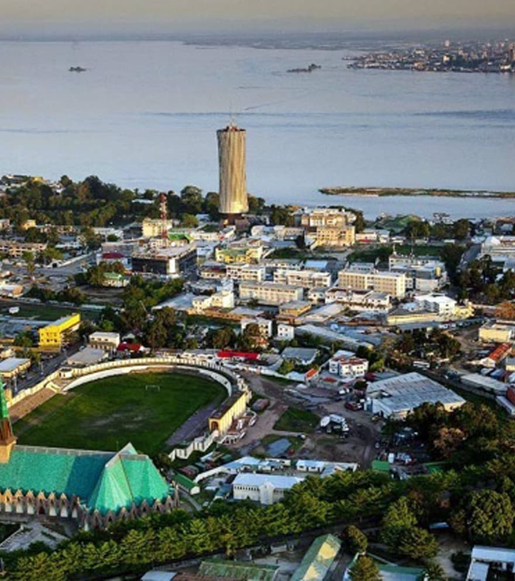

Yavich Soundat
About Me
My name is Yavich Soundat, and I am a student at BYU-Pathway Worldwide. I am developing my skills in web development, programming, and technology. I enjoy learning new things and using technology to solve practical problems.
Republic of Congo

The Republic of Congo is located in Central Africa. Its capital city is Brazzaville.